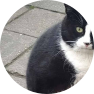
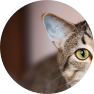
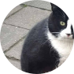
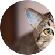
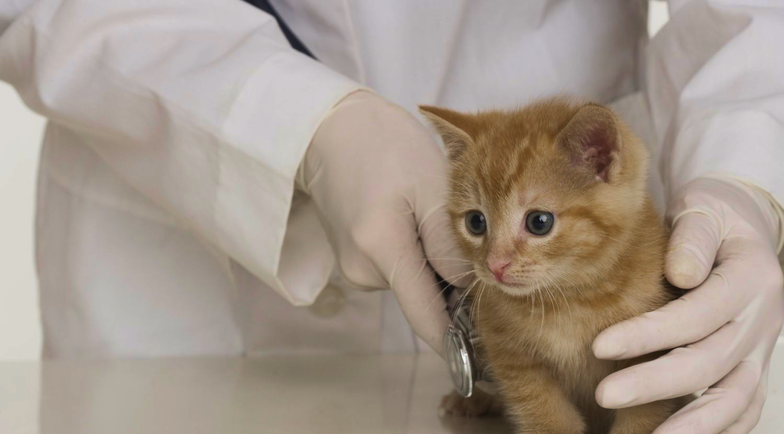

© 2024 Gaterinaria. Todos los derechos reservados.


TESTIMONIOS
De nuestros visitantes
“Estas personas son el equipo de veterinarios amantes de los animales más
increíble con el que mi esposa y yo hemos tenido el placer de trabajar. Se
especializan en medicina felina y hacen todo lo posible para asegurarse de
que los miembros peludos de su familia reciban el mejor cuidado posible. Los
hemos utilizado durante años. ¡Reciben mi más alta recomendación!”
- Alguien
“¡El personal aquí es maravilloso! La Dra. Cacciottoli es estupenda, se
preocupa genuinamente por asegurarse de que los pacientes tengan una visita
lo más libre de estrés posible y también dedica una buena cantidad de tiempo
a explicarles a los ansiosos padres de gatitos cómo cuidarlos. Sus precios
son razonables y el personal de apoyo es excelente. ¡Definitivamente
recomiendo Cat Clinic para las necesidades de sus bebés peludos!”
 



- Otra persona

Nuestro Equipo
Gaterinaria es un hospital veterinario exclusivo para felinos con servicio
completo. Nuestra misión es brindar atención veterinaria de la más alta
calidad para su gato en un entorno relajado. Nuestra prioridad número uno es
ayudar a que su gato viva una vida feliz y saludable durante el mayor tiempo
posible.
SOBRE NOSOTROS
ejemplo@gmail.com
(809) 123-4567

Dr. Melissa Lord
Veterinaria
La Dra. Lord se graduó en 2013 del Colegio de Medicina Veterinaria de la Universidad Estatal de Iowa. Siempre ha tenido una afinidad especial por la medicina felina. Después de trabajar en Purina durante su primer año tras graduarse, se dedicó a la medicina de emergencia durante 7 años. Aunque es originaria de Omaha, Nebraska, la Dra. Lord considera que St. Louis es su hogar. En sus días libres, se la puede encontrar en su jardín tomando café junto a sus seis gallinas, montando a caballo por St. Louis o acurrucándose con sus cuatro adorables gatos.
Dr. Melissa Lord
Veterinaria
La Dra. Lord se graduó en 2013 del Colegio de Medicina Veterinaria de la Universidad Estatal de Iowa. Siempre ha tenido una afinidad especial por la medicina felina. Después de trabajar en Purina durante su primer año tras graduarse, se dedicó a la medicina de emergencia durante 7 años. Aunque es originaria de Omaha, Nebraska, la Dra. Lord considera que St. Louis es su hogar. En sus días libres, se la puede encontrar en su jardín tomando café junto a sus seis gallinas, montando a caballo por St. Louis o acurrucándose con sus cuatro adorables gatos.
Dr. Melissa Lord
Veterinaria
La Dra. Lord se graduó en 2013 del Colegio de Medicina Veterinaria de la Universidad Estatal de Iowa. Siempre ha tenido una afinidad especial por la medicina felina. Después de trabajar en Purina durante su primer año tras graduarse, se dedicó a la medicina de emergencia durante 7 años. Aunque es originaria de Omaha, Nebraska, la Dra. Lord considera que St. Louis es su hogar. En sus días libres, se la puede encontrar en su jardín tomando café junto a sus seis gallinas, montando a caballo por St. Louis o acurrucándose con sus cuatro adorables gatos.
Dr. Melissa Lord
Veterinaria
La Dra. Lord se graduó en 2013 del Colegio de Medicina Veterinaria de la Universidad Estatal de Iowa. Siempre ha tenido una afinidad especial por la medicina felina. Después de trabajar en Purina durante su primer año tras graduarse, se dedicó a la medicina de emergencia durante 7 años. Aunque es originaria de Omaha, Nebraska, la Dra. Lord considera que St. Louis es su hogar. En sus días libres, se la puede encontrar en su jardín tomando café junto a sus seis gallinas, montando a caballo por St. Louis o acurrucándose con sus cuatro adorables gatos.
Dr. Melissa Lord
Veterinaria
La Dra. Lord se graduó en 2013 del Colegio de Medicina Veterinaria de la Universidad Estatal de Iowa. Siempre ha tenido una afinidad especial por la medicina felina. Después de trabajar en Purina durante su primer año tras graduarse, se dedicó a la medicina de emergencia durante 7 años. Aunque es originaria de Omaha, Nebraska, la Dra. Lord considera que St. Louis es su hogar. En sus días libres, se la puede encontrar en su jardín tomando café junto a sus seis gallinas, montando a caballo por St. Louis o acurrucándose con sus cuatro adorables gatos.